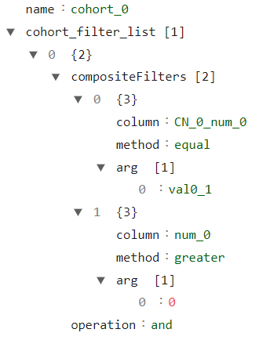

Managing cohorts
This library allows users to apply certain mitigations over a specific cohort, instead of applying it to the entire dataset. This is useful when, for example, two cohorts have a very different label distribution and we want to rebalance each cohort individually, instead of rebalancing the entire dataset. In some scenarios, applying a mitigation over each cohort separately is more advantageous than applying it over the whole dataset.
In this notebook, we’ll show how to apply different pipelines for each cohort separately. To accomplish this, we’ll use the CohortManager class. This class allows us to create multiple pipelines (using transformers from scikit-learn or from the current library) and apply them to each cohort separately. All this is done following the fit() and transform() paradigms, similar to the other mitigations from the dataprocessing module.
First of all, let’s import the CohortManager class, which is found in the cohort module.
[1]:
import random
import numpy as np
import pandas as pd
import xgboost as xgb
from sklearn.pipeline import Pipeline
from raimitigations.utils import create_dummy_dataset
import raimitigations.dataprocessing as dp
from raimitigations.cohort import CohortDefinition, CohortManager, plot_value_counts_cohort
SEED = 42
np.random.seed(SEED)
random.seed(SEED)
Toy dataset
Next, we’ll create a toy dataset so we can showcase how the CohortManager operates.
[2]:
def create_df(with_null: bool = True):
np.random.seed(SEED)
random.seed(SEED)
def add_nan(vec, pct):
vec = list(vec)
nan_index = random.sample(range(len(vec)), int(pct * len(vec)))
for index in nan_index:
vec[index] = np.nan
return vec
df = create_dummy_dataset(
samples=1000,
n_features=2,
n_num_num=0,
n_cat_num=2,
n_cat_cat=0,
num_num_noise=[0.01, 0.05],
pct_change=[0.05, 0.1],
)
if with_null:
col_with_nan = ["num_0", "num_1", ]
for col in col_with_nan:
if col != "label":
df[col] = add_nan(df[col], 0.1)
X = df.drop(columns=["label"])
y = df[["label"]]
return X, y
# -----------------------------------
def get_model():
model = xgb.XGBClassifier(
objective="binary:logistic",
learning_rate=0.1,
n_estimators=30,
max_depth=10,
colsample_bytree=0.7,
alpha=0.0,
reg_lambda=10.0,
nthreads=4,
verbosity=0,
use_label_encoder=False,
)
return model
[3]:
X, y = create_df()
X
[3]:
| num_0 | num_1 | CN_0_num_0 | CN_1_num_1 | |
|---|---|---|---|---|
| 0 | 1.601034 | 2.535353 | val0_0 | val1_3 |
| 1 | 1.755945 | -2.172352 | val0_1 | val1_0 |
| 2 | 2.354479 | NaN | val0_0 | val1_0 |
| 3 | 4.103090 | -0.766515 | val0_1 | val1_2 |
| 4 | 1.753178 | 1.787514 | val0_0 | val1_1 |
| ... | ... | ... | ... | ... |
| 995 | 2.713939 | 1.451639 | val0_1 | val1_2 |
| 996 | 1.420812 | 2.535627 | val0_0 | val1_3 |
| 997 | 3.844315 | 1.211294 | val0_1 | val1_2 |
| 998 | 0.974124 | 2.619258 | val0_0 | val1_3 |
| 999 | 4.641478 | -0.243075 | val0_1 | val1_1 |
1000 rows × 4 columns
Basic scenario
Next, we’ll explore a basic scenario where the CohortManager can prove its usefulness. In this scenario, we want to apply an imputation, followed by a min max scaler over each cohort separately. Once again: this is useful when each cohort has different behaviors or distributions for a particular column, so applying an imputation based on the mean value of the column over each cohort separately will make more sense than using the mean of the column of the entire dataset, for example.
The CohortManager requires two main parameters: a transformation pipeline and a list of cohort definitions. The latter is already explored and explained in the notebook showcasing the CohortDefinition class (which is used internally by the CohortManager). The former is simply a list of objects that implement the fit(), transform(), predict() paradigm, or the fit_resample() method (for rebalancing classes, such as the Rebalance class from the dataprocessing
module, or the rebalance classes from the imblearn library).
There are two constraints when defining the cohorts:
The definitions must not allow any instance to belong to more than 1 cohort. If that happens, an error is raised;
The definitions must include all instances (without repetition due to the previous constraint). Since in some cases it is difficult to define a set of conditions for the last cohort such that it includes all instances not belonging to any of the previous cohorts, we created an easier way to accomplish this: the condition list for the last cohort is allowed to be
None. When this happens, this cohort is understood as being the one with all the remaining instances that don’t belong to any of the other cohorts.
Once we instantiate the CohortManager object, we can treat it similarly to other classes from the dataprocessing module: call the fit() and transform() methods. Internally, what will happen is the following:
the cohort pipeline will be duplicated, such that we’ll have one pipeline for each cohort, with different objects instantiation;
during the
fit()method, we’ll cycle through all cohorts, and for each cohort:we’ll first filter the dataset provided (in this case,
Xandy) so that it includes only instances that belong to the current cohort;with the subset of the current cohort, we’ll call the
fit()method for all the transformations in the cohort’s pipeline (in the order in which they appear) using the subset dataset as input;
during the
transform()method, we’ll use a similar approach, but instead of calling thefit()method for the transformers in each cohort’s pipeline, this time we’ll call thetransform()method;if all cohorts are compatible with each other, that is, have the same columns after applying all transforms, then all subsets are concatenated together. The full dataset is then returned. If there are any inconsistencies between the cohorts, then we’ll just add each subset into a list of subsets, and the final variable returned in this case is a list of subsets (we’ll explore some examples ahead).
[4]:
cohort_pipeline = [
dp.BasicImputer(verbose=False),
dp.DataMinMaxScaler(verbose=False),
]
c1 = [ ['CN_0_num_0', '==', 'val0_1'], 'and', ['num_0', '>', 0.0] ]
c2 = [ ['CN_0_num_0', '==', 'val0_0'], 'and', ['num_0', '>', 0.0] ]
c3 = None
cohort_set = CohortManager(
transform_pipe=cohort_pipeline,
cohort_def=[c1, c2, c3]
)
cohort_set.fit(X=X, y=y)
new_X = cohort_set.transform(X)
new_X
[4]:
| num_0 | num_1 | CN_0_num_0 | CN_1_num_1 | |
|---|---|---|---|---|
| 0 | 0.616278 | 0.790075 | val0_0 | val1_3 |
| 1 | 0.340936 | 0.040024 | val0_1 | val1_0 |
| 2 | 0.910331 | 0.660560 | val0_0 | val1_0 |
| 3 | 0.816398 | 0.284064 | val0_1 | val1_2 |
| 4 | 0.675657 | 0.688320 | val0_0 | val1_1 |
| ... | ... | ... | ... | ... |
| 995 | 0.534997 | 0.669115 | val0_1 | val1_2 |
| 996 | 0.545942 | 0.790112 | val0_0 | val1_3 |
| 997 | 0.763978 | 0.627393 | val0_1 | val1_2 |
| 998 | 0.371610 | 0.801491 | val0_0 | val1_3 |
| 999 | 0.925459 | 0.374928 | val0_1 | val1_1 |
1000 rows × 4 columns
Pipelines that result in incompatible cohorts
As previously mentioned, in some cases, the pipeline associated with one or more cohorts may result in a cohort incompatible with at least one of the other cohorts. For example, consider the case where we add a one-hot encoding transformation in the pipeline. This will probably result in each cohort having different columns, which are the columns created by the one-hot encoder (for example, in case one of the cohorts doesn’t have all existing values in a categorical column that is being encoded).
This is also valid for any other encoder method since categorical encoders require a list of all valid categorical values in the column before creating the encoding. However, for the ordinal encoder, for example, it is not easy to automatically identify an incompatibility between the cohorts, since the ordinal encoder doesn’t change the number of columns. To remedy this (at least for the mitigations from the dataprocessing module), we implemented a way for the CohortManager to query if a
given class results in incompatible cohorts or not. Therefore, if we use the EncoderOrdinal from the dataprocessing module in the pipeline, we’ll be able to automatically identify that each cohort will be incompatible between each other, and thus, the transform() method will return a dictionary of subsets instead of a single dataset. This dictionary will have a key assigned to each of the cohorts’ names.
[5]:
cohort_pipeline = [
dp.BasicImputer(verbose=False),
dp.DataMinMaxScaler(verbose=False),
dp.EncoderOrdinal(verbose=False)
]
cohort_set = CohortManager(
transform_pipe=cohort_pipeline,
cohort_def=[c1, c2, c3]
)
cohort_set.fit(X=X, y=y)
subset_dict = cohort_set.transform(X)
subset_dict.keys()
WARNING: the transformations used over the cohorts resulted in each cohort having different columns. The transform() method will return a list of transformed subsets (one for each cohort).
[5]:
dict_keys(['cohort_0', 'cohort_1', 'cohort_2'])
[6]:
subset_dict['cohort_0']
[6]:
| num_0 | num_1 | CN_0_num_0 | CN_1_num_1 | |
|---|---|---|---|---|
| 1 | 0.340936 | 0.040024 | 0 | 0 |
| 3 | 0.816398 | 0.284064 | 0 | 2 |
| 5 | 0.402537 | 0.692783 | 0 | 3 |
| 8 | 0.299020 | 0.843083 | 0 | 1 |
| 10 | 0.626370 | 0.180212 | 0 | 2 |
| ... | ... | ... | ... | ... |
| 990 | 0.371002 | 0.696937 | 0 | 2 |
| 991 | 0.358171 | 0.089578 | 0 | 0 |
| 995 | 0.534997 | 0.669115 | 0 | 2 |
| 997 | 0.763978 | 0.627393 | 0 | 2 |
| 999 | 0.925459 | 0.374928 | 0 | 1 |
542 rows × 4 columns
Adding estimators to the pipeline
The pipelines are not limited to having only transformers, as we can also add estimators to them. Some considerations when adding an estimator into the pipeline:
The estimator must be the last object in the pipeline (this implies that we can only have 1 estimator in each pipeline);
The estimator must implement at least the
predict()method. It can also implement thepredict_proba()method, but the latter is not mandatory;If the pipeline is comprised of a set of transformers (that implement the
transform()method) and the estimator (that is, the pipeline doesn’t contain only the estimator), then the cohort manager object will be allowed to call thetransform()andpredict()methods (and thepredict_proba()as well, but only if the estimator implements this method)in this case, the
transform()method will call only thetransform()methods of the transformers up until the estimator, since this latter doesn’t have atransform()method
[7]:
cohort_pipeline = [
dp.BasicImputer(verbose=False),
dp.DataMinMaxScaler(verbose=False),
dp.EncoderOrdinal(verbose=False),
get_model()
]
cohort_set = CohortManager(
transform_pipe=cohort_pipeline,
cohort_def=[c1, c2, c3]
)
cohort_set.fit(X=X, y=y)
/home/mmendonca/anaconda3/envs/raipub/lib/python3.9/site-packages/xgboost/sklearn.py:1421: UserWarning: `use_label_encoder` is deprecated in 1.7.0.
warnings.warn("`use_label_encoder` is deprecated in 1.7.0.")
[7]:
<raimitigations.cohort.cohort_manager.CohortManager at 0x7fc074d77d00>
When calling the transform() method, it will return a list of subsets, since the EncoderOrdinal results in incompatible cohorts (as previously mentioned). The transform() method will run the transform() of all transformers up until we get to the model.
[8]:
subset_dict = cohort_set.transform(X)
subset_dict['cohort_0']
WARNING: the transformations used over the cohorts resulted in each cohort having different columns. The transform() method will return a list of transformed subsets (one for each cohort).
[8]:
| num_0 | num_1 | CN_0_num_0 | CN_1_num_1 | |
|---|---|---|---|---|
| 1 | 0.340936 | 0.040024 | 0 | 0 |
| 3 | 0.816398 | 0.284064 | 0 | 2 |
| 5 | 0.402537 | 0.692783 | 0 | 3 |
| 8 | 0.299020 | 0.843083 | 0 | 1 |
| 10 | 0.626370 | 0.180212 | 0 | 2 |
| ... | ... | ... | ... | ... |
| 990 | 0.371002 | 0.696937 | 0 | 2 |
| 991 | 0.358171 | 0.089578 | 0 | 0 |
| 995 | 0.534997 | 0.669115 | 0 | 2 |
| 997 | 0.763978 | 0.627393 | 0 | 2 |
| 999 | 0.925459 | 0.374928 | 0 | 1 |
542 rows × 4 columns
We can then call the predict() method. Since the predictions will have the same format regardless if the cohorts are compatible or not, then the predict() and predict_proba() will always return a single prediction array by default. However, this behavior can be changed through the split_pred parameter for both of these methods: if split_pred = False, then a single prediction array is returned (this is the default behavior), but if split_pred = True, then a dictionary of
predictions is returned instead.
[9]:
pred_arr = cohort_set.predict(X)
pred_arr.shape
[9]:
(1000,)
[10]:
pred_dict = cohort_set.predict(X, split_pred=True)
for cohort_name in pred_dict.keys():
print(f"{cohort_name}: {pred_dict[cohort_name].shape}")
cohort_0: (542,)
cohort_1: (341,)
cohort_2: (117,)
Similarly, we can also call the predict_proba() method.
[11]:
pred_arr = cohort_set.predict_proba(X)
pred_arr.shape
[11]:
(1000, 2)
Note that if none of the transformers in the pipeline result in incompatible cohorts, then the predict() method will return a single array of predictions, just like a regular estimator. To demonstrate this, let’s remove the categorical columns of the dataset (so that the estimator works without an encoder). Let’s also redefine our cohorts so that we don’t reference any of the categorical columns removed.
When calling the transform() method in this scenario, it will return a single dataset, as previously shown.
[12]:
X_num = X.drop(columns=['CN_0_num_0', 'CN_1_num_1'])
cohort_pipeline = [
dp.BasicImputer(verbose=False),
dp.DataMinMaxScaler(verbose=False),
get_model()
]
c1 = [ ['num_0', '>', 1.5] ]
c2 = None
cohort_set = CohortManager(
transform_pipe=cohort_pipeline,
cohort_def=[c1, c2]
)
cohort_set.fit(X=X_num, y=y)
new_X = cohort_set.transform(X_num)
new_X
/home/mmendonca/anaconda3/envs/raipub/lib/python3.9/site-packages/xgboost/sklearn.py:1421: UserWarning: `use_label_encoder` is deprecated in 1.7.0.
warnings.warn("`use_label_encoder` is deprecated in 1.7.0.")
[12]:
| num_0 | num_1 | |
|---|---|---|
| 0 | 0.028385 | 0.891836 |
| 1 | 0.072545 | 0.048710 |
| 2 | 0.243165 | 0.623450 |
| 3 | 0.741629 | 0.300489 |
| 4 | 0.071756 | 0.757902 |
| ... | ... | ... |
| 995 | 0.345633 | 0.697749 |
| 996 | 0.971967 | 0.781923 |
| 997 | 0.667862 | 0.654704 |
| 998 | 0.806418 | 0.792162 |
| 999 | 0.895103 | 0.394234 |
1000 rows × 2 columns
The same applies to the predict() method, where it will return a single array of predictions this time.
[13]:
pred = cohort_set.predict(X_num)
pred.shape
[13]:
(1000,)
Getting a list of subsets
Sometimes we just want to break a new dataset into subsets, where we have one subset for each of the cohorts being used. We can do this using the get_subsets() method from the CohortManager class. This method accepts three parameters:
A dataset that has at least the columns used by the cohorts’ filters (this means that the dataset may also have other columns not used by the filters);
A dataset containing only the label column (
ydataset). This parameter is optional, and it is useful when we want to filter a feature dataset (X) and a label dataset (y), and get a list of subsets fromXandy;A boolean value indicating if we want to apply the transformations pipeline used for each cohort or not. If set to True, this method will behave similarly to the
transform()method, with the main difference being that this method will always return a list of subsets, even if the cohorts are compatible with each other.
The returned variable is a dictionary where the primary keys are the name of the cohorts, and the secondary keys are:
X: the subset of the features dataset;y: the subset of the label dataset. This key will only be returned if theydataset is passed in the method’s call.
The following cell shows an example of how to call this method without applying the transformations.
[14]:
subsets = cohort_set.get_subsets(X_num, apply_transform=False)
subsets['cohort_0']['X']
[14]:
| num_0 | num_1 | |
|---|---|---|
| 0 | 1.601034 | 2.535353 |
| 1 | 1.755945 | -2.172352 |
| 2 | 2.354479 | NaN |
| 3 | 4.103090 | -0.766515 |
| 4 | 1.753178 | 1.787514 |
| ... | ... | ... |
| 990 | 1.904364 | 1.611914 |
| 991 | 1.841023 | -1.886888 |
| 995 | 2.713939 | 1.451639 |
| 997 | 3.844315 | 1.211294 |
| 999 | 4.641478 | -0.243075 |
637 rows × 2 columns
[15]:
subsets.keys()
[15]:
dict_keys(['cohort_0', 'cohort_1'])
Let’s now compare the resulting subsets when setting the apply_transform to True:
[16]:
subsets = cohort_set.get_subsets(X_num, apply_transform=True)
subsets['cohort_0']['X']
[16]:
| num_0 | num_1 | |
|---|---|---|
| 0 | 0.028385 | 0.891836 |
| 1 | 0.072545 | 0.048710 |
| 2 | 0.243165 | 0.623450 |
| 3 | 0.741629 | 0.300489 |
| 4 | 0.071756 | 0.757902 |
| ... | ... | ... |
| 990 | 0.114854 | 0.726453 |
| 991 | 0.096797 | 0.099836 |
| 995 | 0.345633 | 0.697749 |
| 997 | 0.667862 | 0.654704 |
| 999 | 0.895103 | 0.394234 |
637 rows × 2 columns
[17]:
subsets['cohort_0'].keys()
[17]:
dict_keys(['X'])
In the previous cell, we can see that we only have the X key for each cohort, since we didn’t pass the y dataset as a parameter to the method. Let’s now look at an example where we want the subsets of both the features and labels (X and y):
[18]:
subsets = cohort_set.get_subsets(X_num, y, apply_transform=True)
subsets['cohort_0'].keys()
[18]:
dict_keys(['X', 'y'])
[19]:
for key in subsets.keys():
print(f"\n{key}")
print(subsets[key]["X"].shape)
print(subsets[key]["y"].shape)
cohort_0
(637, 2)
(637, 1)
cohort_1
(363, 2)
(363, 1)
Naming the cohorts
So far, we created a list of conditions for each cohort and passed that to the CohortManager without specifying the cohort’s name. In that case, the cohorts will be named automatically. This name is later used in the subsets dictionary returned by the get_subsets() method, as we’ve shown in the previous subsection. We can provide a specific name to each cohort by passing a dictionary of condition lists to the CohortManager instead of passing a list of conditions. The following cell
demonstrates this:
[20]:
cohort_set = CohortManager(
transform_pipe=cohort_pipeline,
cohort_def={"Large num_0":c1, "Remaining":c2}
)
cohort_set.fit(X_num, y)
subsets = cohort_set.get_subsets(X_num, y, apply_transform=True)
subsets.keys()
[20]:
dict_keys(['Large num_0', 'Remaining'])
Handling datasets without column names
When handling a dataset without column names, we can use the column indices as the column identifier in the conditions list. However, the indices must be passed as a string, not a number. In the following cell, we demonstrate an example where we create a set of conditions using the column indices. Note that this approach will only work if the dataset doesn’t have any column names. If the dataset has valid column names, then these names should be used instead of the indices.
Note that in the following example, we are not passing a list of transformations to the transform_pipe parameter. Instead, we are passing a single transformer. This is also allowed, and what will happen in the background is that an empty list will be created for each cohort, and this transformer will be copied and added to each of these lists.
[21]:
new_X = X.copy()
new_y = y.copy()
new_X.columns = [i for i in range(new_X.shape[1])]
new_y.columns = [i for i in range(new_y.shape[1])]
c1 = [ ['2', '==', 'val0_1'], 'and', ['0', '>', 0.0] ]
c2 = [ ['2', '==', 'val0_0'], 'and', ['0', '>', 0.0] ]
c3 = None
cohort_set = CohortManager(
transform_pipe=dp.DataMinMaxScaler(verbose=False),
cohort_def=[c1, c2, c3]
)
cohort_set.fit(X=new_X, y=new_y)
new_X = cohort_set.transform(new_X)
new_X
[21]:
| 0 | 1 | 2 | 3 | |
|---|---|---|---|---|
| 0 | 0.616278 | 0.790075 | val0_0 | val1_3 |
| 1 | 0.340936 | 0.040024 | val0_1 | val1_0 |
| 2 | 0.910331 | NaN | val0_0 | val1_0 |
| 3 | 0.816398 | 0.284064 | val0_1 | val1_2 |
| 4 | 0.675657 | 0.688320 | val0_0 | val1_1 |
| ... | ... | ... | ... | ... |
| 995 | 0.534997 | 0.669115 | val0_1 | val1_2 |
| 996 | 0.545942 | 0.790112 | val0_0 | val1_3 |
| 997 | 0.763978 | 0.627393 | val0_1 | val1_2 |
| 998 | 0.371610 | 0.801491 | val0_0 | val1_3 |
| 999 | 0.925459 | 0.374928 | val0_1 | val1_1 |
1000 rows × 4 columns
Using CohortManager with Sci-Kit Learn’s Pipeline
scikit-learn’s Pipeline class is a well-established approach for creating pipelines. Therefore, the CohortManager class was designed to work with Pipeline, allowing users to create even more complex data processing pipelines.
The following cell shows an example of how to create a Pipeline using an instance of the CohortManager class. The pipeline created in this example will do the following:
Run the
BasicImputerandDataMinMaxScaler(in that order) over each cohort separately. Notice that each cohort will have a separate object from these classes. Since these transformations result in compatible cohorts, thetransform()method will return a single dataset;Run the
EncoderOrdinalover the dataset returned by theCohortManager(that is, the encoding is done over the entire dataset, not over each cohort individually);Fit the model (an XGBoost in this case) over the dataset processed by the
CohortManagerandEncoderOrdinal.
[22]:
cohort_pipeline = [
dp.BasicImputer(verbose=False),
dp.DataMinMaxScaler(verbose=False),
]
c1 = [ ['CN_0_num_0', '==', 'val0_1'], 'and', ['num_0', '>', 0.0] ]
c2 = [ ['CN_0_num_0', '==', 'val0_0'], 'and', ['num_0', '>', 0.0] ]
c3 = None
cohort_set = CohortManager(
transform_pipe=cohort_pipeline,
cohort_def=[c1, c2, c3]
)
skpipe = Pipeline([
("cohort_preprocess", cohort_set),
("encoder", dp.EncoderOrdinal(verbose=False)),
("model", get_model())
])
skpipe.fit(X, y)
pred = skpipe.predict_proba(X)
pred = skpipe.predict(X)
/home/mmendonca/anaconda3/envs/raipub/lib/python3.9/site-packages/xgboost/sklearn.py:1421: UserWarning: `use_label_encoder` is deprecated in 1.7.0.
warnings.warn("`use_label_encoder` is deprecated in 1.7.0.")
Fetching the queries used for each cohort
The get_queries() method returns a dictionary with the queries used for each cohort.
[23]:
queries = cohort_set.get_queries()
queries
[23]:
{'cohort_0': '(`CN_0_num_0` == "val0_1") and (`num_0` > 0.0)',
'cohort_1': '(`CN_0_num_0` == "val0_0") and (`num_0` > 0.0)',
'cohort_2': '((`CN_0_num_0` != "val0_1") or ((`num_0` <= 0.0) or (`num_0`.isnull()))) and ((`CN_0_num_0` != "val0_0") or ((`num_0` <= 0.0) or (`num_0`.isnull())))'}
Creating cohorts based on a set of columns
In some cases, users might be interested in creating one cohort for each possible value in a given column (for example, if a dataset has a gender column, we might be interested in creating one cohort for each gender). To avoid the cumbersome task of creating one condition list for each value in a given column, we CohortManager use the cohort_col parameter instead of the cohort_def during the instantiation of the object. Here are more details about these two parameters:
cohort_def: already explored in the previous subsections. Accepts a list of condition lists (one for each cohort), or a dictionary of condition lists;cohort_col: accepts a list of column names or indices, from which one cohort is created for each unique combination of values for these columns.
In the following example, we show how to create a set of cohorts based on the CN_0_num_0 column. We then use the get_queries() method to look at the cohorts created.
[24]:
cohort_set = CohortManager(
transform_pipe=dp.DataMinMaxScaler(verbose=False),
cohort_col=["CN_0_num_0"]
)
cohort_set.fit(X, y)
queries = cohort_set.get_queries()
queries
[24]:
{'cohort_0': '(`CN_0_num_0` == "val0_0")',
'cohort_1': '(`CN_0_num_0` == "val0_1")'}
We can also use the column indices instead of their names:
[25]:
cohort_set = CohortManager(
transform_pipe=dp.DataMinMaxScaler(verbose=False),
cohort_col=[2]
)
cohort_set.fit(X, y)
queries = cohort_set.get_queries()
queries
[25]:
{'cohort_0': '(`CN_0_num_0` == "val0_0")',
'cohort_1': '(`CN_0_num_0` == "val0_1")'}
Note that in both examples we had to call the fit() method before calling the get_queries() method. This is necessary because, when using the cohort_col parameter instead of the cohort_def, the cohorts can only be created when a valid dataset is provided. Since we didn’t provide a dataset in the constructor method, then the cohorts are only built when the fit method is called. In the following cell we provide the dataset in the constructor method just to show this:
[26]:
cohort_set = CohortManager(
transform_pipe=dp.DataMinMaxScaler(verbose=False),
cohort_col=[2],
X=X, y=y
)
queries = cohort_set.get_queries()
queries
[26]:
{'cohort_0': '(`CN_0_num_0` == "val0_0")',
'cohort_1': '(`CN_0_num_0` == "val0_1")'}
Just to better demonstrate this, let’s now use the cohort_def parameter, while not providing the datasets in the constructor method. In this case, we can also call the get_queries() method before calling the fit() method.
[27]:
cohort_set = CohortManager(
transform_pipe=dp.DataMinMaxScaler(verbose=False),
cohort_def=[c1, c2, c3]
)
queries = cohort_set.get_queries()
queries
[27]:
{'cohort_0': '(`CN_0_num_0` == "val0_1") and (`num_0` > 0.0)',
'cohort_1': '(`CN_0_num_0` == "val0_0") and (`num_0` > 0.0)',
'cohort_2': '((`CN_0_num_0` != "val0_1") or ((`num_0` <= 0.0) or (`num_0`.isnull()))) and ((`CN_0_num_0` != "val0_0") or ((`num_0` <= 0.0) or (`num_0`.isnull())))'}
As previously mentioned, the cohort_col parameter accepts a list of column names, not a single column. When more than one column is provided, we create one cohort for each combination of unique values in these columns:
[28]:
cohort_set = CohortManager(
transform_pipe=dp.DataMinMaxScaler(verbose=False),
cohort_col=["CN_0_num_0", "CN_1_num_1"]
)
cohort_set.fit(X=X, y=y)
queries = cohort_set.get_queries()
queries
[28]:
{'cohort_0': '(`CN_0_num_0` == "val0_0") and (`CN_1_num_1` == "val1_0")',
'cohort_1': '(`CN_0_num_0` == "val0_0") and (`CN_1_num_1` == "val1_1")',
'cohort_2': '(`CN_0_num_0` == "val0_0") and (`CN_1_num_1` == "val1_2")',
'cohort_3': '(`CN_0_num_0` == "val0_0") and (`CN_1_num_1` == "val1_3")',
'cohort_4': '(`CN_0_num_0` == "val0_1") and (`CN_1_num_1` == "val1_0")',
'cohort_5': '(`CN_0_num_0` == "val0_1") and (`CN_1_num_1` == "val1_1")',
'cohort_6': '(`CN_0_num_0` == "val0_1") and (`CN_1_num_1` == "val1_2")',
'cohort_7': '(`CN_0_num_0` == "val0_1") and (`CN_1_num_1` == "val1_3")'}
Saving and loading the conditions used for the cohorts
The save_cohorts() method saves the list of conditions used by all cohorts into a JSON file. This way, users are able to then reuse these condition lists in another CohortManager object. The save_cohorts() has the same conditions as the get_queries() method: if using cohort_col, then we must either pass the datasets in the constructor method, or call the fit() method prior to calling the save_cohorts() method.
[29]:
cohort_set = CohortManager(
transform_pipe=dp.DataMinMaxScaler(verbose=False),
cohort_def=[c1, c2, c3]
)
cohort_set.fit(X=X, y=y)
json_files = [
"json_files/CohortManager_tutorial/cht_0.json",
"json_files/CohortManager_tutorial/cht_1.json",
"json_files/CohortManager_tutorial/cht_2.json",
]
cohort_set.save_cohorts(json_files)
The JSON file saved has the following structure (note that it follows the same JSON structure used by the raiwidgets library):

We can then create a new CohortManager object and pass the list of paths to the JSON files containing the cohort definitions to the cohort_json_files parameter. After loading the cohort files, we can verify that the same conditions are being used.
[31]:
cohort_set = CohortManager(
transform_pipe=dp.BasicImputer(verbose=False),
cohort_json_files=json_files
)
queries = cohort_set.get_queries()
queries
[31]:
{'cohort_0': "((`CN_0_num_0` in ['val0_1']) and (`num_0` > 0.0))",
'cohort_1': "((`CN_0_num_0` in ['val0_0']) and (`num_0` > 0.0))",
'cohort_2': "(((`CN_0_num_0` not in ['val0_1']) or ((`num_0` <= 0.0) or (`num_0`.isnull()))) and ((`CN_0_num_0` not in ['val0_0']) or ((`num_0` <= 0.0) or (`num_0`.isnull()))))"}
If you have the file for only a few of the cohorts that needs to be created, but don’t want to create a file for the cohort with the remaining instances, you can proceed similarly to what we do with the cohort_def parameter: the last json file passed through the cohort_json_files can be a None value, which indicates that that cohort should include all instances that doesn’t belong to any of the other cohorts.
To demonstrate this, suppose that we only have the json files for cohort_0 and cohort_1. To load these files using the CohortManager, we should do the following:
[32]:
json_files = [
"json_files/CohortManager_tutorial/cht_0.json",
"json_files/CohortManager_tutorial/cht_1.json",
None
]
cohort_set = CohortManager(
transform_pipe=dp.BasicImputer(verbose=False),
cohort_json_files=json_files
)
queries = cohort_set.get_queries()
queries
[32]:
{'cohort_0': "((`CN_0_num_0` in ['val0_1']) and (`num_0` > 0.0))",
'cohort_1': "((`CN_0_num_0` in ['val0_0']) and (`num_0` > 0.0))",
'Remaining Instances': "(((`CN_0_num_0` not in ['val0_1']) or ((`num_0` <= 0.0) or (`num_0`.isnull())))) and (((`CN_0_num_0` not in ['val0_0']) or ((`num_0` <= 0.0) or (`num_0`.isnull()))))"}
Using different pipelines for each cohort
So far, every time we created an instance of the CohortMManager class, the same pipeline was used over all cohorts (different instances of the same pipeline, given that the fit() must be called using only the subset associated to a given cohort). However, there might be some scenarios where we might be interested in using different transformations for each cohort. We won’t cover here these scenarios. Instead, here we’ll show how to create different pipelines for each cohort.
There are four scenarios associated with the transform_pipe parameter:
An empty list or ``None`` is provided: in this case, the
CohortManagerwon’t apply any transformations over the dataset. Thetransform()method will simply return the dataset provided;A single transformer is provided: in this case, this single transformer is placed in a list (a list with a single transformer), which is then replicated such that each cohort has its own list of transformations (pipeline);
A list of transformers is provided: in this case, this pipeline is replicated for each cohort;
A list of pipelines is provided: a list of pipelines is basically a list of lists of transformations. In this case, the list of pipelines should have one pipeline for each cohort created, that is, the length of the
transform_pipeparameter should be the same as the number of cohorts created. The pipelines will be assigned to each cohort following the same order as thecohort_defparameter (depicted in the following example).
In the following example, we’ll create 3 cohorts and 3 pipelines: the first pipeline will contain only a DataMinMaxScaler transformer, the second pipeline contains only a DataPowerTransformer transformer, and the third pipeline is empty, that is, it doesn’t apply any transformations over the data. These pipelines will be associated with cohorts c1, c2, and c3 respectively.
[31]:
X
[31]:
| num_0 | num_1 | CN_0_num_0 | CN_1_num_1 | |
|---|---|---|---|---|
| 0 | 1.601034 | 2.535353 | val0_0 | val1_3 |
| 1 | 1.755945 | -2.172352 | val0_1 | val1_0 |
| 2 | 2.354479 | NaN | val0_0 | val1_0 |
| 3 | 4.103090 | -0.766515 | val0_1 | val1_2 |
| 4 | 1.753178 | 1.787514 | val0_0 | val1_1 |
| ... | ... | ... | ... | ... |
| 995 | 2.713939 | 1.451639 | val0_1 | val1_2 |
| 996 | 1.420812 | 2.535627 | val0_0 | val1_3 |
| 997 | 3.844315 | 1.211294 | val0_1 | val1_2 |
| 998 | 0.974124 | 2.619258 | val0_0 | val1_3 |
| 999 | 4.641478 | -0.243075 | val0_1 | val1_1 |
1000 rows × 4 columns
[32]:
X, y = create_df()
c1 = [ ['CN_1_num_1', '==', 'val1_3'] ]
c2 = [ ['CN_1_num_1', '==', 'val1_0'] ]
c3 = None
c1_pipe = [dp.DataMinMaxScaler(verbose=False)]
c2_pipe = [dp.DataPowerTransformer(verbose=False)]
c3_pipe = []
cohort_set = CohortManager(
transform_pipe=[c1_pipe, c2_pipe, c3_pipe],
cohort_def=[c1, c2, c3]
)
cohort_set.fit(X=X, y=y)
new_X = cohort_set.transform(X)
new_X
[32]:
| num_0 | num_1 | CN_0_num_0 | CN_1_num_1 | |
|---|---|---|---|---|
| 0 | 0.560649 | 0.730360 | val0_0 | val1_3 |
| 1 | 0.369841 | 0.231139 | val0_1 | val1_0 |
| 2 | 1.089526 | NaN | val0_0 | val1_0 |
| 3 | 4.103090 | -0.766515 | val0_1 | val1_2 |
| 4 | 1.753178 | 1.787514 | val0_0 | val1_1 |
| ... | ... | ... | ... | ... |
| 995 | 2.713939 | 1.451639 | val0_1 | val1_2 |
| 996 | 0.524491 | 0.730402 | val0_0 | val1_3 |
| 997 | 3.844315 | 1.211294 | val0_1 | val1_2 |
| 998 | 0.434872 | 0.743060 | val0_0 | val1_3 |
| 999 | 4.641478 | -0.243075 | val0_1 | val1_1 |
1000 rows × 4 columns
Use Rebalance over each cohort separately
Rebalancing a dataset is not always a trivial task. In some cases, we might have a class imbalance in the whole dataset, but different cohorts of this dataset depict different imbalance distributions. In such a scenario, rebalancing the full dataset might result in an even greater imbalance for a set of cohorts, even though the full dataset is now balanced. Therefore, we might want to rebalance each cohort separately, in order to obtain a balanced dataset and balanced cohorts.
In this subsection, we’ll explore how the CohortManager can easily help us achieve this goal.
We’ll create a CohortManager just to obtain the cohorts of interest and plot their distributions.
[34]:
X, y = create_df(with_null=False)
cohort_set = CohortManager(
cohort_col=["CN_1_num_1"]
)
cohort_set.fit(X=X, y=y)
subsets = cohort_set.get_subsets(X, y, apply_transform=False)
print(y.value_counts())
for key in subsets.keys():
print(subsets[key]["y"].value_counts())
plot_value_counts_cohort(y, subsets, normalize=False)
label
1 795
0 205
dtype: int64
label
0 119
1 11
dtype: int64
label
0 74
1 31
dtype: int64
label
1 495
0 6
dtype: int64
label
1 258
0 6
dtype: int64
We can see that the full dataset has a great imbalance, where we have a considerably larger number of occurrences of the 1 class in relation to the 0 class. This imbalance is even greater for cohorts cohort_2 and cohort_3, while for cohorts cohort_0 and cohort_1 this imbalance is inverted: there are a lot more instances from the 0 class when compared to the 1 class.
Balancing the full dataset
Let’s now rebalance the full dataset. Here, We use the Rebalance class from the dataprocessing module. Afterward, we plot the label distributions once more to see if our problem is solved.
[35]:
rebalance = dp.Rebalance(verbose=False)
new_X, new_y = rebalance.fit_resample(X, y)
cohort_set.fit(X=new_X, y=new_y)
subsets = cohort_set.get_subsets(new_X, new_y, apply_transform=False)
print(new_y.value_counts())
for key in subsets.keys():
print(subsets[key]["y"].value_counts())
plot_value_counts_cohort(new_y, subsets, normalize=False)
/home/mmendonca/anaconda3/envs/raipub/lib/python3.9/site-packages/sklearn/preprocessing/_encoders.py:808: FutureWarning: `sparse` was renamed to `sparse_output` in version 1.2 and will be removed in 1.4. `sparse_output` is ignored unless you leave `sparse` to its default value.
warnings.warn(
1 795
0 795
Name: label, dtype: int64
0 463
1 11
Name: label, dtype: int64
0 313
1 31
Name: label, dtype: int64
1 495
0 8
Name: label, dtype: int64
1 258
0 11
Name: label, dtype: int64
As we can see, the full dataset is now balanced. However, looking at each cohort separately, we noticed that we only made matters worse: we now have an even greater label imbalance inside each cohort. If we think of these cohorts as sensitive groups, that is, groups separated by sensitive features, e.g. gender, race, and nationality, and that we don’t want our models to perform differently in one group compared to another, then this imbalance between cohorts is a scenario that needs to be fixed.
Balancing each cohort separately
We’ll now use the Rebalance class over each cohort separately, in order to obtain a set of balanced cohorts. This might aid us in obtaining fair models, that is, models that perform equally through cohorts. To do this, we’ll use the CohortManager, and we’ll pass the Rebalance object to the transform_pipe parameter. We’ll then call the fit_resample() method, implemented by the Rebalance class. Note that when using a pipeline with an object that implements the
fit_resample() class, there can’t be any transformers that implement the transform() and predict() methods, since these transformations serve different purposes: the former is used for rebalancing, that is, creating new instances in the X and y datasets, while the latter require that the number of instances of the dataset is kept fixed between each transformation.
[36]:
rebalance_cohort = CohortManager(
transform_pipe=dp.Rebalance(verbose=False),
cohort_col=["CN_1_num_1"]
)
new_X, new_y = rebalance_cohort.fit_resample(X, y)
subsets = rebalance_cohort.get_subsets(new_X, new_y, apply_transform=False)
plot_value_counts_cohort(new_y, subsets, normalize=False)
/home/mmendonca/anaconda3/envs/raipub/lib/python3.9/site-packages/sklearn/preprocessing/_encoders.py:808: FutureWarning: `sparse` was renamed to `sparse_output` in version 1.2 and will be removed in 1.4. `sparse_output` is ignored unless you leave `sparse` to its default value.
warnings.warn(
/home/mmendonca/anaconda3/envs/raipub/lib/python3.9/site-packages/sklearn/preprocessing/_encoders.py:808: FutureWarning: `sparse` was renamed to `sparse_output` in version 1.2 and will be removed in 1.4. `sparse_output` is ignored unless you leave `sparse` to its default value.
warnings.warn(
/home/mmendonca/anaconda3/envs/raipub/lib/python3.9/site-packages/sklearn/preprocessing/_encoders.py:808: FutureWarning: `sparse` was renamed to `sparse_output` in version 1.2 and will be removed in 1.4. `sparse_output` is ignored unless you leave `sparse` to its default value.
warnings.warn(
/home/mmendonca/anaconda3/envs/raipub/lib/python3.9/site-packages/sklearn/preprocessing/_encoders.py:808: FutureWarning: `sparse` was renamed to `sparse_output` in version 1.2 and will be removed in 1.4. `sparse_output` is ignored unless you leave `sparse` to its default value.
warnings.warn(
[37]:
new_y.value_counts()
[37]:
0 946
1 946
Name: label, dtype: int64
As we can see, we now have a balanced full dataset, while also having balanced cohorts.
Balancing only a set of cohorts
Suppose that we trained a model that is under-performing only for cohorts cohort_2 and cohort_3. In this case, we can keep the remaining cohorts unchanged, and balance only cohorts cohort_2 and cohort_3. To do this, we can use a separate pipeline for each cohort, where cohorts cohort_2 and cohort_3 use a pipeline comprised with only a Rebalance object, while the other two cohorts use an empty pipeline.
[38]:
rebalance_cohort = CohortManager(
transform_pipe=[
[],
[],
[dp.Rebalance(verbose=False)],
[dp.Rebalance(verbose=False)],
],
cohort_col=["CN_1_num_1"]
)
new_X, new_y = rebalance_cohort.fit_resample(X, y)
subsets = rebalance_cohort.get_subsets(new_X, new_y, apply_transform=False)
plot_value_counts_cohort(new_y, subsets, normalize=False)
/home/mmendonca/anaconda3/envs/raipub/lib/python3.9/site-packages/sklearn/preprocessing/_encoders.py:808: FutureWarning: `sparse` was renamed to `sparse_output` in version 1.2 and will be removed in 1.4. `sparse_output` is ignored unless you leave `sparse` to its default value.
warnings.warn(
/home/mmendonca/anaconda3/envs/raipub/lib/python3.9/site-packages/sklearn/preprocessing/_encoders.py:808: FutureWarning: `sparse` was renamed to `sparse_output` in version 1.2 and will be removed in 1.4. `sparse_output` is ignored unless you leave `sparse` to its default value.
warnings.warn(